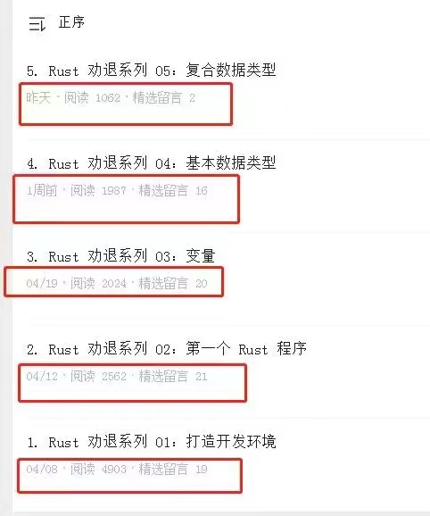

Rust 劝退系列 06：常量
大家好，我是站长 polarisxu。
这是 Rust 劝退系列的第 6 个教程，探讨 Rust 中的常量，因为 static 和常量有类似之处，因此一并探讨。（Rust By Example 中甚至将常量分成两种类型：const 和 static，我个人觉得常量是常量，static 修饰的是变量，不能算是常量）
01 常量
在 Rust 语言中，术语"常量"用于表示固定的值，比如 5 、-89、 I love Rust、3.14 等等。一旦我们定义了一个常量，那么就再也不能改变常量的值了。
Rust 语言中使用 const 关键字来定义一个常量。定义常量时需要明确指定常量的数据类型。
看看下面的代码：（&str 类型以后讲解）
const NUM: i32 = 5; // const NUM = 5i8 编译不通过
const PI: f64 = 3.14;
const LOVE: &str = "I love Rust!"; // 也可以使用： &'static str，即指定声明周期
在变量那一节讲过字面量。常量要求赋值时只能是常量表达式（字面量是常量表达式一种），这一点大部分语言都类似，即要求是编译期能计算出值的。
关于常量，需要注意以下几点：
- 必须显示指定数据类型。这一点我认为不如 Go。变量能推断，为什么常量不能推断呢？Go 甚至是无类型常量，这样在具体参与计算或赋值时，在赋予合适的类型，有点类似 Rust 变量的动态推断。即使有字面量类型后缀也不行。
- 常量名一般使用大写字母，否则编译器会报 Warning。
- 在编译时，常量会被替换为具体的值。这有点类似于 C 语言中的
#define。 - 常量不支持重定义（遮蔽），这和变量是不同的。
02 静态变量
这部分内容，我建议你看完就忘掉它！！！
Rust 中，静态变量也叫全局变量。一般不建议使用。通过 static 定义静态变量。（Go 中没有 static 关键字）
示例：
static NUM: i32 = 100;
之所以将它和常量放在一起讲，是因为和常量有一些相似之处：
- 定义方式类型，一个使用 static，一个使用 const；
- 名称都要求使用大写，否则会报 Warning；
- 都必须明确指定类型；
- 两者都要求必须使用常量表达式进行赋值，即必须是编译期能计算出的值；
但和常量也有一些重要的区别：
- 常量在编译时被内联，但静态变量不会。在整个程序中静态变量只有一个实例，也就是说所有引用都指向同一个地址。
- 常量不可变，而静态变量和普通变量一样，默认不可变，但可以通过 mut 关键字定义为可变。
也正是因为全局变量有可变特性，导致多个线程同时访问时，可能引发数据竞争，导致内存安全问题。因此，对于全局可变变量的访问和修改必须放在 unsafe 块中进行。以下代码编译不通过：
static mut NUM: i32 = 10;
fn main() {
NUM += 1;
println!("{}", NUM);
}
编译器提示：
error[E0133]: use of mutable static is unsafe and requires unsafe function or block
改为这样就可以了：
static mut NUM: i32 = 10;
fn main() {
unsafe {
NUM += 1;
println!("{}", NUM);
}
}
unsafe，Go 程序员应该很熟悉。在 Go 中一般也建议别用它。
如果不用 unsafe，也就是静态变量别定义为可变，那这和常量似乎没啥区别，直接使用 const 更好。
03 小结
Rust 中的常量没有太多特殊的地方，但静态变量，我建议忘记它的存在。可能有极端的场景，通过静态变量能带来一些好处，但应该不是必须的。Rust 本身就够复杂的了，能学简单点就简单点。因此，我建议你可以忘掉关于 static 的内容。
上次有朋友截了个图，发现这个系列阅读量阶梯型下跌：

如果你都看到这里了，说明你还在坚持学习 Rust，随手给我来个三连吧：在看、点赞、转发，让我有坚持写下去的动力~